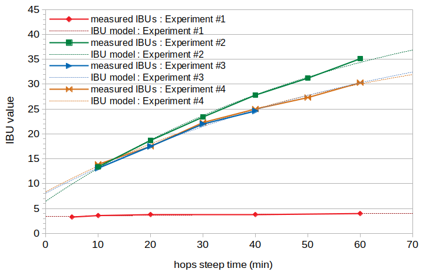
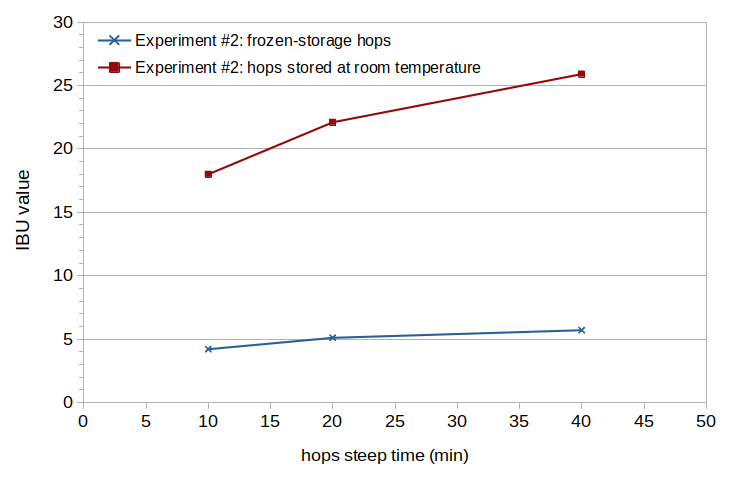

Abstract
The IBU combines the concentration of isomerized alpha acids (IAAs) and the concentration of "auxiliary bittering compounds" (ABCs) in beer into a single measure of approximate bitterness. While IAAs contribute the most to the IBU in typical beers, ABCs play a significant role and may have concentrations greater than IAAs in very late-hopped beers. The auxiliary bittering compounds are composed of polyphenols, oxidized alpha acids, and oxidized beta acids. This blog post estimates the relative contribution of oxidized alpha acids and oxidized beta acids to the IBU, using data from beer brewed with four varieties of hops. The data indicate that when using well-preserved hops, the concentration of oxidized alpha acids in beer is much greater than the concentration of oxidized beta acids. It is estimated that the auxiliary bittering compounds in most beers made with well-preserved hops are composed primarily of oxidized alpha acids, with much lower contributions from malt polyphenols, hop polyphenols, and finally oxidized beta acids. When hops have been stored for long periods with exposure to oxygen, however, the oxidized beta acids may contribute significantly to the IBU.
1. Introduction
The IBU is a measure of the concentration of a number of different bitter compounds. (To be more precise, the IBU is a measure of the absorbance of light at 275 nm through acidified beer. A number of bitter compounds in beer absorb light at this frequency. The greater the concentration of these compounds, the more light is absorbed, and the higher the IBU.) In typical beers, the IBU value represents mostly the concentration of isomerized alpha acids (IAAs) [Peacock, pp. 164-165], which are produced during the boil from alpha acids (AA). The other bitter compounds, known as "auxiliary bittering compounds" (ABCs), or nonIAA, are polyphenols, oxidized alpha acids, and oxidized beta acids. These compounds can be considered to be present in the wort soon after the hops addition [e.g. Dierckens and Verzele, p. 454; Askew, p. 18]. (Alpha acids, which are present in wort [Hough et al., p. 491] and also absorb light at 275 nm [Hough et al., p. 434, p. 491], are not bitter [Shellhammer, p. 169] but also not typically present in the fermented beer [e.g. Lewis and Young, p. 259, Hough et al., p. 491]. Therefore, they do not contribute to the measured IBU value of beer except when dry hopping.)
While "typical" beers (if there is such a thing anymore) have a much greater concentration of IAAs compared to ABCs, beers produced with a large amount of hops added very late in (or after) the boil can have ABC concentrations greater than IAAs. In modeling IBUs and getting a better understanding of the bitterness qualities of late-hopped beers, it is beneficial to have an estimate of the relative concentrations of the compounds that are collectively referred to as ABCs. While the contribution of malt and hop polyphenols to the IBU is generally known (as discussed in Section 4), a quantitative analysis of the relative contribution of oxidized alpha- and beta-acids is not easily found in the literature.
This blog post estimates the relative concentrations of oxidized alpha- and beta-acids in beer by analysis of IBU values. These IBU values were obtained by ASBC Beer-23A analysis of samples taken at different points in the boil from four beers brewed with different varieties of hops (and different alpha-acid and beta-acid ratings).
2. The Concentration of Isomerized Alpha Acids in Beer
Mark Malowicki developed formulas to estimate the concentration of IAAs in the wort from the initial concentration of alpha acids [Malowicki, p. 27]:
| k1(T) = 7.9×1011 e-11858/T | [1] |
| k2(T) = 4.1×1012 e-12994/T | [2] |
| [IAA]wort = [AA]0 × (k1(T)/(k2(T) − k1(T))) × (e–k1(T)t − e–k2(T)t) | [3] |
| [IAA]beer = [IAA]wort × scalingIAA | [4] |
| IBU = 5/7 × ([IAA]beer + [ABC]beer) | [5] |
The concentration of ABCs in beer ([ABC]beer) can be expressed as the sum of the concentrations of the individual ABC compounds multiplied by appropriate scaling factors that relate each concentration to absorption at 275 nm:
| [ABC]beer = [PPmalt]beer × scalePPmalt + [PPhops]beer × scalePPhops + [oAA]beer × scaleoAA + [oBA]beer × scaleoBA | [6] |
Alternatively, we can express the concentration of ABCs in beer as the concentration of total hop particles added to the wort, multiplied by a single scaling factor that accounts for (a) the proportion of each ABC compound to total hop matter, (b) different absorption factors of these compounds, and (c) losses of each ABC to trub and during fermentation:
| [ABC]beer = [hops]wort × scalingABC | [7] |
We can estimate the scaling factors scalingIAA and scalingABC from these equations and measured IBU values of beer samples fermented from wort taken at different time points during the boil. This technique is described in the blog post Estimating Isomerized Alpha Acids and nonIAA from Multiple IBU Measurements.
4. The Concentration of Polyphenols in Beer
Polyphenols in beer come from both malt and hops. This section describes how to estimate their concentration in beer and their impact on IBUs.
4.1 Malt Polyphenols
According to Tom Shellhammer, IBUs are in the range of 1 to 3 for unhopped beer [Shellhammer, p. 177]. In one experiment, I brewed several unhopped beers and developed a formula for predicting IBUs that come from malt polyphenols:
| IBUPPmalt = ((OG − 1.0) × 1000) × 0.019) × ((1.734 × (5.75 − pH) / 0.7) + 1.0) | [8] |
| [PPmalt]beer × scalePPmalt = 7/5 × IBUPPmalt | [9] |
4.2 Hop Polyphenols
Hop polyphenol levels are often reported in the range from 2% to 6% of the weight of the hops [Shellhammer, p. 169; Hough et al., p. 422; Algazzali, p. 5; Verzele and De Keukeleire, p. 9]. After having been added to the wort, polyphenols are removed "extensively by precipitation with proteins during wort boiling"; 80% of hop flavanols are removed in the trub when boiling hopped wort [McLaughlin, p. 7]. Yeast has only a minor effect on polyphenol concentrations during fermentation [Leiper and Miedl, p. 136; Alexander], but losses to trub and krausen may be similar to those of malt polyphenols, estimated at 30%. Finally, we need a scaling factor, scalePPhops, to use with the concentration of hop polyphenols in Equation [6]. According to Ellen Parkin, "an increase of 100 mg/L of polyphenols was predicted to increase the [IBU] value by 2.2" [Parkin, p. 28], so that 1 ppm of hop polyphenols should increase the IBU by 0.022. We can multiply this by 7/5 to convert from an IBU value to a concentration scaling factor (using Equations [5] and [6]).
From this, we can construct a model of the concentration of hop polyphenols in beer and the associated scaling factor, with an initial level of polyphenols at 4% of the weight of the hops, a loss factor (or combined solubility and loss factor) for polyphenols during the boil estimated at 0.20 (corresponding to 80% loss), and a loss factor of 0.70 (corresponding to 30% loss) during fermentation:
| [PPhops]beer = 0.04 × 0.20 × 0.70 × W × 1000 / V | [10] |
| scalePPhops = 7/5 × 0.022 = 0.0308 | [11] |
4.3 Relative Contributions of Malt and Hop Polyphenols
The majority of polyphenols in beer come from malt. According to Steve Alexander, "roughly 75% of total beer phenolics come from malt, and the remaining 25% come from hops" [Alexander]. Denis De Keukeleire states that "hops may contribute up to about one third of the total polyphenols in beer" [De Keukeleire, p. 109]. According to Cynthia Almaguer et al., "about 20–30% of the polyphenols found in the wort come from the hop material" [Almaguer, p. 300].
5. Oxidized Alpha- and Beta-Acids in Beer
Alpha acids (before isomerization) "do not survive to any significant extent into beer" [e.g. Lewis and Young, p. 259] and are not bitter [Shellhammer, p. 169], but as they age and become oxidized, the resulting oxidized alpha acids (oAAs) are both soluble in wort and bitter [Algazzali, pp. 14-15, p. 19, p.45; Maye et al, p. 23; Hough et al., pp. 435-436; Hough et al., p. 439; Lewis and Young, p. 265]. Oxidized alpha acids are also produced during the boil [Parkin, p. 11, Algazzali, p. 17; Dierckens and Verzele, p. 454; Oliver p. 471], but the amount of oxidized alpha acids produced in this way is unclear.
Oxidized beta acids (oBAs) are also soluble [Algazzali, p. 16] and may be produced and contribute to bitterness in the same way as oxidized alpha acids [Malowicki, p. 2; Peacock, p. 157; Fix, p. 36; Lewis and Young, p. 265; Hall, p. 55; Oliver, p. 132; Oliver, p. 470; Parkin, p. 11; Algazzali, p. 17; Hough et al., p. 489]. Val Peacock says that "the beta oxidation products contribute to analytical IBUs" [Peacock, p. 161] and that "much of the nonIAA material originates from the oxidation of the beta acids as hops age" [Peacock, p. 164]. Oxidized beta acids may also be produced during the boil [Spetsig, p. 350]. Stevens and Wright provide an estimate of the amount of oxidized beta acids produced during the boil, noting that "as much as 10% of the beta acid had been converted into cohulupone" [Stevens and Wright, p. 500]. If 10% of the beta acids are oxidized during the boil, and if oxidized beta acids contribute to analytical IBUs, then oxidized beta acids can contribute to a significant portion of ABCs even when using fresh hops. If beta acids are not oxidized during the boil, then the contribution of oxidized beta acids may depend on how well the hops have been stored. In this case, poorly-preserved hops may have a greater contribution of oxidized beta acids to the IBU than well-preserved hops. Almaguer notes that "further oxidation of the [oxidized beta acids] will result in the non-bitter hulupinic acid" [Almaguer, p. 295]. It is not clear how quickly the oxidized beta acids are converted into hulupinic acid. This process might occur very quickly, in which case even oxidized beta acids from poorly-stored hops will not contribute to the IBU. Or, this transformation might occur over weeks or months, in which case oxidized beta acids may contribute significantly to the IBU.
In addition to the concentrations of these products in beer, [oAA]beer and [oBA]beer, we're also concerned with how their concentrations relate to IBU measurement via the scaling factors scaleoAA and scaleoBA. According to the data in Maye et al. (Figure 7), the scaling factor for scaleoAA is 0.0130 / 0.0142 = 0.9155 [Maye, p. 25]. According to Hough et al., "[oxidized beta acids] exhibit 80-90% of the absorption of the iso-alpha-acids at [275 nm in acid solution]" [Hough et al., p. 491]. Therefore, the oxidized beta-acid scaling factor is about 0.85.
| scaleoAA = 0.0130 / 0.0142 = 0.9155 | [12] |
| scaleoBA = 0.85 | [13] |
6. Experimental Overview
To evaluate the relative proportion of oxidized alpha- and beta-acids in beer, I designed two new experiments and took IBU data from three earlier experiments. The new experiments used Teamaker hops, known for having almost no alpha acids and a very high concentration of beta acids.
The three other experiments are described in the blog posts The Impact of Krausen Loss on IBUs, The Effect of pH on Utilization and IBUs, and Hop Cones vs. Pellets: IBU Differences. I took data from Condition B of the Krausen Loss experiment, Condition A of the Effect of pH experiment, and Condition A of the Cones vs. Pellets experiment because those conditions were most similar to the new experiment with the exception of hop variety. The primary difference between the different sets of data was in the variety of hops used, with different alpha- and beta-acid ratings, and in the storage conditions of the Teamaker hops.
7. Experimental Details and Results
7.1 New Experiment #1 (Experiment #1)
The first new experiment used well-preserved Teamaker hops. Wort was prepared from 4.13 lbs (1.87 kg) of Briess Pilsen Light Dried Malt Extract and 3.22 G (12.20 liters) of 120°F (49°C) low-alkalinity water, yielding 3.48 G (13.17 liters) of room-temperature wort. This wort sat for 90 minutes to let the pH stabilize. The measured pre-boil specific gravity was 1.054. The wort was boiled for 5 minutes before adding hops in order to reduce the foam associated with the start of the boil.
I used 2.01 oz (57.0 grams) of Teamaker hops in this experiment. The hops were analyzed by AAR Lab and showed an alpha-acid (AA) rating of 0.41% and a beta-acid (BA) rating of 11.93%, in line with expectations. (I had harvested and dried these hops four weeks earlier and stored them in a vacuum-sealed bag in my freezer. The resins were a deep orange color, in contrast with the normal bright yellow. The AAR results also showed 13% moisture and a hop storage index (HSI) of 0.188.)
When the hops were added to the kettle (defined as time t = 0), the (temperature-corrected) specific gravity was 1.0565 and the pH was 5.74. The estimated volume at the time when hops were added was 3.36 G (12.71 liters), estimated from the initial volume and gravity and the measured gravity at time 0.
After adding the hops, 15-oz (0.44 l) samples were periodically taken from the boiling wort and quickly cooled in an aluminum cup and ice bath. Samples were taken after the hops had been steeping for 5, 10, 20, 40, and 60 minutes. The kettle was covered during the boil to minimize evaporation and the resulting changes in specific gravity. Once they reached 75°F (24°C), the cooled samples were transferred to sanitized quart (liter) containers. The wort in each container was aerated for 1 minute by vigorous shaking, and 0.011 oz (0.31 grams) of Safale US-05 yeast (age 7 months) was pitched to target 750,000 cells per ml and degree Plato. At the end of the 60-minute boil, the specific gravity was 1.0577 and the pH was 5.69.
Each sample fermented for 8 days (with a small opening to vent CO2). The krausen was left to deposit on the sides of the vessel during fermentation. After a week the krausen was more "billowy" than normal, still covering the beer. I removed this krausen one day before taking samples for IBU analysis by Oregon BrewLab.
The measured IBU values at 5, 10, 20, 40, and 60 minutes were 3.3, 3.6, 3.8, 3.8, and 4.0, respectively. These values are plotted with a solid red line in Figure 1.
7.2 Results from Experiment on Krausen Loss (Experiment #2)
The full details of the experiment on krausen loss are given in that blog post. In summary, for Condition B, the gravity when the hops were added (t = 0) was 1.037 and the estimated volume was 8.38 G (31.72 liters). I added 1.88 oz (53.31 grams) of Comet hops to the wort with an alpha-acid rating of 9.7% and a beta-acid rating of 3.7%, for an initial alpha-acid concentration of about 160 ppm. The gravity at the end of the boil was 1.039 and the estimated volume was 8.06 G (30.49 liters). The measured IBU values of the resulting beer are plotted with a solid green line in Figure 1.
7.3 Results from Experiment on Impact of pH on Utilization and IBUs (Experiment #3)
The full details of the experiment on the effects of pH on IBUs are given in that blog post. In summary, for Condition A, the gravity when the hops were added (t = 0) was 1.038 and the estimated volume was 4.25 G (16.09 liters). I added 0.65 oz (18.28 grams) of Citra hops to the wort with an alpha-acid rating of 14.2% and a beta-acid rating of 3.35%, for an initial alpha-acid concentration of about 160 ppm. The gravity at the end of the boil was 1.039 and the estimated volume was 4.08 G (15.43 liters). The measured IBU values of the resulting beer are plotted with a solid blue line in Figure 1.
7.4 Results from Experiment on Cones and Pellets (Experiment #4)
The full details of the experiment on the differences between hop cones and pellets are given in the blog post Hop Cones vs. Pellets: IBU Differences. In summary, for Condition A, the gravity when the hops were added (t = 0) was 1.039 and the estimated volume was 8.28 G (31.36 liters). I added 3.72 oz (105.57 grams) of Willamette hops to the wort with an alpha-acid rating of 5.0% and a beta-acid rating of about 3.4%, for an initial alpha-acid concentration of about 170 ppm. The gravity at the end of the boil was 1.039 and the estimated volume was 8.16 G (30.88 liters). The measured IBU values of the resulting beer are plotted with a solid orange line in Figure 1.
 Figure 1. Measured IBUs (solid lines) and model IBUs (dotted lines) from the four experiments in this blog post. Experiment #1 (red line) used 57.0 g of Teamaker hops with an alpha-acid rating of 0.4%. Experiment #2 (green line) used 53.3 g of Comet hops with an alpha-acid rating of 9.7%. Experiment #3 (blue line) used 18.3 g of Citra hops with an alpha-acid rating of 14.2%. Experiment #4 (orange line) used 105.6 g of Willamette hops with an alpha-acid rating of 5.0%.
7.5 New Experiment #2 (Experiment #5)
The second new experiment had two conditions: (A) one condition using Teamaker hops stored in oxygen-barrier packaging in a freezer for six months (well-preserved hops), and (B) one condition using the same harvest of Teamaker hops stored with exposure to oxygen and at room temperature for six months (poorly-preserved hops).
Wort for each condition was prepared from 3.02 lbs (1.37 kg) of Briess Pilsen Light Dried Malt Extract and 3.31 G (12.53 liters) of 120°F (49°C) low-alkalinity water, yielding 3.50 G (13.25 liters) of room-temperature wort. This wort sat for 90 minutes to let the pH stabilize. The measured pre-boil specific gravity was 1.037. The wort was boiled for 5 minutes before adding hops in order to reduce the foam associated with the start of the boil.
I used 2.0 oz (56.7 grams) of Teamaker hops in each condition. The hops were analyzed by AAR Lab within one week of the experiment and showed an alpha-acid (AA) rating of 0.64% and a beta-acid (BA) rating of 10.92% for the well-preserved hops, and an AA rating of 0.57% and a BA rating of 3.61% for the poorly-preserved hops. (The AAR results also showed 9.8% moisture and a hop storage index (HSI) of 0.291 for the well-preserved hops, and 7.5% moisture and an HSI of 1.050 for the poorly-preserved hops.)
When the hops were added to the kettle (defined as time t = 0), the specific gravity was 1.041 and the pH was 5.87. The estimated volume at the time when hops were added was 3.21 G (12.15 liters).
After adding the hops, 15-oz (0.44 l) samples were periodically taken from the boiling wort and quickly cooled in an aluminum cup and ice bath. Samples were taken after the hops had been steeping for 10, 20, and 40 minutes. The kettle was covered during the boil to minimize evaporation and the resulting changes in specific gravity. The cooled samples were transferred to sanitized quart (liter) containers once they reached 75°F (24°C). The wort in each container was aerated for 1 minute by vigorous shaking, and 0.009 oz (0.25 grams) of Safale US-05 yeast (age 10 months) was pitched to target 750,000 cells per ml and degree Plato. At the end of the 60-minute boil, the specific gravity was 1.042 and the pH was about 5.78.
Each sample fermented for 10 days (with a small opening to vent CO2). Very little krausen accumulated on the sides of the vessel during fermentation. IBU values were measured by Oregon BrewLab.
The measured IBU values for the well-preserved hops at 10, 20, and 40 minutes were 4.2, 5.1, and 5.7, respectively. The measured IBU values for the poorly-preserved hops at 10, 20, and 40 minutes were 18.0, 22.1, and 25.9, respectively. These values are plotted with blue (well-preserved hops) and red (poorly-preserved hops) lines in Figure 2.
 Figure 2. Measured IBU values from well-preserved Teamaker hops (blue line) and poorly-preserved Teamaker hops (red line).
8. Analysis
We now have all of the information we need to estimate the concentrations of oxidized alpha acids and oxidized beta acids in finished beer. First, we will consider oxidized beta acids produced during the boil using well-preserved hops. Then we will consider what happens when using poorly-preserved hops
8.1 Analysis Step 1
The first step is to estimate the concentrations of IAAs, malt polyphenols, and hop polyphenols in the beer and (using the associated scaling factors) subtract their effects from the measured IBUs, yielding the "remaining" IBUs that come from oxidized alpha- and beta-acids. This step is repeated for all four experiments. The rest of this section explains this step in more detail and provides the analysis results from each experiment.
To estimate the IAA concentration, we can use the technique described in Estimating Isomerized Alpha Acids and nonIAA from Multiple IBU Measurements to determine the values of scalingIAA and scalingABC for each experiment. The results of fitting the data to this model are shown with the dashed red, green, blue, and orange lines in Figure 1 for Experiments #1, #2, #3, and #4, respectively.
We can combine Equations 4, 5, and 6 to be explicit about all of the contributions to the IBU, and highlight variables with "known" values in green and variables with "unknown" values in red:
| IBU = 5/7 × ([IAA]wort × scalingIAA + ([PPmalt]beer × scalePPmalt) + [PPhops]beer × scalePPhops + [oAA]beer × scaleoAA + [oBA]beer × scaleoBA) | [14] |
| IBUremaining = IBU − 5/7 × ([IAA]wort × scalingIAA + [PPmalt]beer × scalePPmalt + [PPhops]beer × scalePPhops) | [15] |
| IBUremaining = 5/7 × ([oAA]beer × scaleoAA + [oBA]beer × scaleoBA) | [16] |
| IBUoAA = 5/7 × ([oAA]beer × scaleoAA) | [17] |
| IBUoBA = 5/7 × ([oBA]beer × scaleoBA) | [18] |
| IBUremaining = IBUoAA + IBUoBA | [19] |
For each of the four experiments, Table 1 lists (a) the root-mean-square (RMS) error between the measured IBU values and the model that solves for scalingIAA and scalingABC, (b) the IBUs at time 0 (when the hops are added to the boiling wort) according to this model, at which point the ABCs have been added to the wort but there is not yet any production of isomerized alpha acids, (c) the estimated IBUs from malt polyphenols (determined from the original gravity and Equation [8]), (d) the estimated IBUs from hop polyphenols (determined from Equations [10] and [11]), and (e) the remaining IBUs according to Equation [15].
In Experiment #1, there was an initial alpha-acid concentration of 18 ppm and an initial beta-acid concentration of 535 ppm. In Experiment #2, the initial alpha-acid concentration was 163 ppm and the initial beta-acid concentration was 53 ppm. In Experiment #3, the initial alpha-acid concentration was 161 ppm and the initial beta-acid concentration was 38 ppm. In Experiment #4, the initial alpha-acid concentration was 168 ppm and the initial beta-acid concentration was 116 ppm.
| IBU model RMS error | model IBUs at time 0 | IBUs from malt polyphenols | IBUs from hop polyphenols | remaining IBUs | |
| Experiment #1 | 0.136 | 3.21 | 1.23 | 0.55 | 1.42 |
| Experiment #2 | 0.314 | 6.42 | 0.86 | 0.21 | 5.35 |
| Experiment #3 | 0.295 | 8.11 | 0.85 | 0.14 | 7.12 |
| Experiment #4 | 0.399 | 8.78 | 0.86 | 0.42 | 7.50 |
8.2 Analysis Step 2
Assuming that the hops have been preserved well and have undergone very little oxidation during storage, we can express the concentration of oxidized alpha acids in the beer as the initial concentration of alpha acids added to the wort multiplied by a scaling factor, lossFactoroAA, that accounts for (a) the percentage of alpha acids that oxidize during the boil and (b) the percentage of oxidized alpha acids that remain after boiling and fermentation. The same formulation can be applied to the beta acids:
| [oAA]beer = [AA]0 × lossFactoroAA | [20] |
| [oBA]beer = [BA]0 × lossFactoroBA | [21] |
We can then note the following relationships by combining Equations [17, 18, 20, 21]:
| IBUoAA = 5/7 × ([AA]0 × lossFactoroAA × scaleoAA) | [22] |
| IBUoBA = 5/7 × ([BA]0 × lossFactoroBA × scaleoBA) | [23] |
| IBUremaining = 5/7 × [AA]0 × lossFactoroAA × scaleoAA + 5/7 × [BA]0 × lossFactoroBA × scaleoBA | [24] |
We can solve for these two loss factors by using the data from the four experiments (obtained in Analysis Step 1) to construct four equations (based on Equation [24]) with the two unknowns:
| 1.42 = 5/7 × 18.38 × lossFactoroAA × 0.9155 + 5/7 × 534.87 × lossFactoroBA × 0.85 | [25] |
| 5.35 = 5/7 × 163.03 × lossFactoroAA × 0.9155 + 5/7 × 53.28 × lossFactoroBA × 0.85 | [26] |
| 7.12 = 5/7 × 161.35 × lossFactoroAA × 0.9155 + 5/7 × 38.06 × lossFactoroBA × 0.85 | [27] |
| 7.50 = 5/7 × 168.32 × lossFactoroAA × 0.9155 + 5/7 × 116.14 × lossFactoroBA × 0.85 | [28] |
Independent of any particular batch of beer, lossFactoroAA and lossFactoroBA describe our best estimate of the contribution of oxidized alpha- and beta-acids to the IBU. For any batch of beer where we know [AA]0 and [BA]0, we can use lossFactoroAA and lossFactoroBA to estimate [oAA]beer and [oBA]beer, and/or their contributions to the IBU. (These estimates may be further influenced by wort pH, age of the beer, the treatment of krausen, among other factors.)
8.3 Analysis of Aged Hops
The experiment comparing well-preserved and poorly-preserved hops clearly indicates that oxidation of the beta acids produced during storage can yield significant IBUs. (I find it remarkable that hops with only 0.57% alpha acids and 3.61% beta acids can yield a beer with more than 20 IBUs. This beer not only tasted more bitter or astringent, it had a more "herbal" quality, similar to Ricola "natural herb" throat drops.) In Figure 2 it can be seen that the IBU values increase with boil time, which was unexpected. Is there some isomerization of oxidized beta acids that occurs along the same time-frame as the isomerization of alpha acids? Because there is no well-motivated explanation for why these IBU values increase, I will simplify the analysis by focusing on a single "representative" boil time, i.e. 20 minutes.
The increase in oxidized beta acids produced during aging at room temperature can be computed from the decrease in beta acids between the two conditions. The beta acids decreased from 10.92% to 3.61%, and so the increase in oxidized beta acids was 7.31% of the weight of the hops. With a volume of 3.16 G (11.96 liters) at the end of the boil and a weight of 2.0 oz (56.70 grams) of hops, the 4741 ppm of hops translates into 346.55 ppm of oxidized beta acids in the post-boil wort. If we assume various relative losses during fermentation and aging (fermentation loss of 0.85, krausen relative increase of 1.38 compared with normal krausen deposits, and an age-related loss factor of 0.96), there are 391 ppm of oxidized beta acids in the finished beer. The increase in IBUs between the two conditions (at a 20-minute boil time) is 17.0 IBUs. We can then map between IBUs and an "oxidized beta acid boil factor", boilFactoroBA, which expresses the reduction in storage-produced oxidized beta acids during the boil:
| IBUoBA = 5/7 × ([oBA]0 × boilFactoroBA × fermentFactoroBA × scaleoAA) | [29] |
| 17.0 = 5/7 × (346.55 × boilFactoroBA × 1.126 × 0.85) | [30] |
9. Conclusion
The estimated scaling factor lossFactoroAA (0.059) being 25 times larger than the scaling factor lossFactoroBA (0.0023) for well-preserved hops means that the oxidized alpha acids contribute much more to the IBU than oxidized beta acids, as long as the hops are well preserved. The estimated contribution of oxidized beta acids is so low in this case, it seems quite likely that oxidized beta acids are not produced during the boil at all.
For poorly-preserved hops, however, the contribution from oxidized beta acids produced during storage appears to be roughly equal to the contribution from oxidized alpha acids produced during the boil. (The better the storage conditions, the less impact that beta acids will have on the IBU.) With oxidized beta acids produced during aging and present in finished beer, the reduction in IBUs from using older hops with a lower alpha-acid content is offset by the oxidation products. As Hough et al. say, "The level of alpha-acid in hops falls during storage but the bittering potential of the hops does not fall to the same extent. This is because many of the oxidation products of both alpha- and beta-acids ... are capable of bittering beer" [Hough et al., p. 489].
If we consider a "typical" beer produced with well-preserved hops, such as an American Pale Ale as described by Ray Daniels [Daniels, pp. 167-172], we might have an original gravity of 1.050, a post-boil volume of 5.25 G (19.87 liters), and a post-boil pH of 5.25. This beer might have five hop additions, all with 9% AA and 5.0% beta acids: one of 0.75 oz (21.26 g) at the start of the 60-minute boil, a second of 0.75 oz (21.26 g) at 45 minutes before flameout, a third of 0.50 oz (14.18 g) at 20 minutes before flameout, a fourth of 0.75 oz (21.26 g) at 10 minutes before flameout, and a dry-hop addition of 1.0 oz (28.35 g). In this case, we might get 50.0 IBUs in total, 33 of those from isomerized alpha acids and 17 from ABCs. Of these 17 ABC IBUs, using the model described above, oxidized alpha acids contribute 14.0 IBUs, oxidized beta acids contribute 0.3 IBUs, malt polyphenols contribute 2.1 IBUs, and hop polyphenols contribute 0.7 IBUs. The oxidized alpha acids are therefore by far the greatest component of the auxiliary bittering compounds (at 82% of all ABC), followed by malt polyphenols (12%), then hop polyphenols (4%), and finally oxidized beta acids (2%). A single hop addition at 10 minutes before flameout will have about as many IBUs coming from oxidized alpha acids as from isomerized alpha acids. This can be seen in Figure 1, with about 13.5 IBUs at a 10-minute steep time averaged over Experiments #2, #3, and #4, and about 7.5 IBUs estimated at time 0 when isomerization begins.
Even if you are uncomfortable with some (or all) of the assumptions made in this model, it is still clear from the measured IBUs in Figure 1 that oxidized beta acids produced during the boil can not contribute significantly to the IBU. First, there is the fact that 535 ppm of beta acids in Experiment #1 yielded less than 4 IBUs, and at least some of those IBUs come from polyphenols. Additionally, if we compare the results of Experiments #3 and #4, the IBU values are very similar. Although the alpha-acid ratings of the hops in the two experiments were very different (14.2% and 5.0%), the amount of hops added to the kettle was set to target a similar alpha-acid concentration (160 to 170 ppm). This resulted in Experiment #3 having an initial beta-acid concentration of 38 ppm and Experiment #4 having an initial beta-acid concentration of 116 ppm. The similarity of the IBU values between the two experiments, with three times the beta-acid concentration in Experiment #4, can best be explained by the alpha acids (both isomerized and oxidized) contributing to the vast majority of the IBU and the beta acids contributing very little to the IBU value.
10. Discussion
From the results of these experiments, it appears that (a) there is little or no production of oxidized beta acids during the boil, (b) about 7% of the oxidized beta acids produced during storage end up in the wort and finished beer, and (c) any transformation of oxidized beta acids to hulupinic acid ([Almaguer, p. 295]) occurs slowly (e.g. over the course of weeks or months).
It is interesting to note similarities between the Rager [Rager] and Tinseth [Tinseth] IBU formulas and the model described here. The Rager formula predicts 5% utilization even for a steep time of 0 minutes, which correlates extremely well with the estimated lossFactoroAA of 0.059 in this blog post. In both cases, before there is any significant isomerization, about 5% of the available alpha acids contribute to the IBU (in the form of oxidized alpha acids). Tinseth, on the other hand, knew that isomerization can be modeled with a first-order reaction [Tinseth], and so the shape of the Tinseth utilization curve is similar to the rate of alpha-acid isomerization determined by Malowicki (Equation [3]).
The slopes of the lines formed by the IBU values in Experiments #2 and #3 imply that Experiment #2 had a higher concentration of alpha acids than Experiment #3 or less loss of isomerized alpha acids. The AA rating of the hops would have to be increased from 9.7% to 12.6% for the loss of IAAs to be the same. While AA levels can be highly variable even within the same bale of hops [Verzele and DeKeukeleire, p. 331], a 30% variation is larger than one would normally expect. It is therefore unclear why there is such a difference between the results of these two experiments. My best guess is that small differences in my degassing procedure when preparing samples for IBU analysis resulted in less loss of IAAs in Experiment #2, and that this effect was combined with normal variation in AA levels. (I have seen a 12% difference in IBUs from the same beer that was degassed in slightly different ways.) On the other hand, the similarity of the results between Experiments #3 and #4 is remarkable given the difference in AA ratings, amount of hops used, and other various differences.
11. Acknowledgment
I would like to thank Dana Garves at Oregon BrewLab for her attention to quality and detail that is reflected in the IBU measurements presented here. The change in measured IBU values over time very closely follows the expected trend, even to the point of a fractional increase between 5 minutes and 60 minutes for the well-preserved Teamaker hops with an AA rating less than 1%. An analysis can only be as good as the data it is based on, and so I greatly appreciate the data of such high caliber.
References
Navigate to:
AlchemyOverlord home page